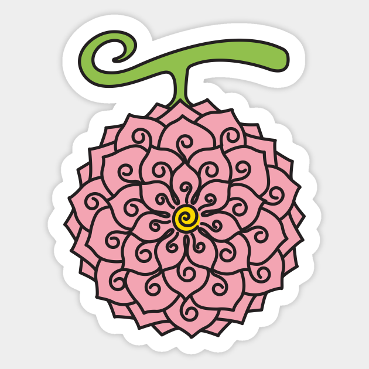
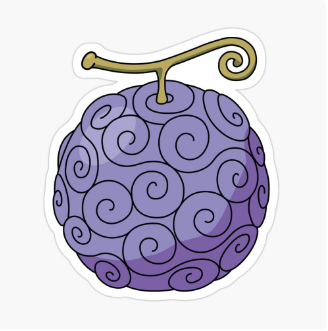
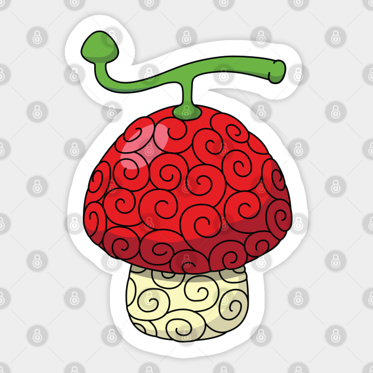
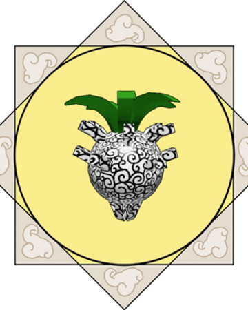
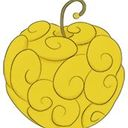
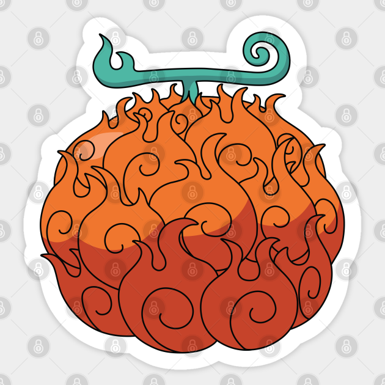

As Akuma no Mi, também conhecidas como Frutas do Diabo, são frutas místicas encontradas em todo o mundo que, quando consumidas, fornecem a pessoa uma habilidade especial, dependendo do tipo e da variação do próprio fruto. Com apenas uma exceção notável, um indivíduo só pode adquirir os poderes de uma única Akuma no Mi.
"Eu ouvi dizer que são encarnações dos demônios dos mares. Se você comer uma, você vai ganhar uma habilidade especial, mas o mar vai te odiar e você não conseguirá mais nadar!" — Shanks fala para Buggy sobre as Akuma no Mi.
O mais comum dos três tipos, os Frutos do Diabo do tipo Paramecia oferecem aos seus usuários habilidades físicas ou características sobre-humanas, como geração de onda de choque e travar alvos. Outras Frutas do Diabo podem alterar características do corpo, como um corpo de borracha ou um corpo de lâminas, ou as pessoas, objetos e ambiente ao redor do usuário, como levitando objetos ou transformando pessoas em brinquedos. Finalmente, existem alguns usuários que podem manipular e gerar alguns tipos de substâncias, como cera e veneno.
Exemplo: Gomu Gomu no Mi que foi comida por Monkey D. Luffy.
Os usuários de Frutas do Diabo do tipo Zoan ganham a capacidade de se transformar em um animal (e adquirir todas as características associadas ao dito animal). O usuário também pode se transformar em uma forma híbrida humano-animal ou um híbrido gêmeo-besta. Frutas Zoan também pode ser transferido para armas, como armas de fogo ou espadas. Podem ser divididas em três categorias:
São o tipo mais comum de Zoan.
Exemplo: Hito Hito no Mi que foi comida por Tony Tony Chopper.
Este tipo de Zoan permite ao usuário se transformar em animais ancestrais já extintos, como dinossauros.
Exemplo: Zou Zou no Mi, Modelo Mamute que foi comida por Jack.
Este tipo de Zoan permite ao usuário se transformar em criaturas mitológicas ou de lendas. O tipo mais raro de Zoan, tão rara quanto as Logia.
Exemplo: Hito Hito no Mi, Modelo Daibutsu que foi comida por Sengoku.
O mais raro dos três tipos de Fruta do Diabo, os Frutos do Diabo do tipo Logia oferecem aos seus usuários a capacidade de se transformarem em um elemento, sejam elementos sólidos como gelo ou areia, líquidos como lama ou xarope, gases como fogo, fumaça e gás venenoso, energia como relâmpago, ou na materialização de conceitos abstratos como escuridão. Isso pode efetivamente torná-los intangíveis, tornando os ataques físicos inofensivos, ou permitindo que eles sejam capazes de absorver o ataque completamente. Eles também ganham todas as habilidades relacionadas a esse elemento (como no caso de areia onde a umidade pode ser absorvida ou relâmpago onde o usuário pode viajar através de objetos como eletricidade faz) e ganhar a habilidade de dispersar, controlar e reintegrar qualquer parte de seus corpos enquanto estiver consciente e no controle de seus poderes (incluindo explosões, ferimentos de bala ou cortes). Os usuários do Logia podem mover cada parte de seus corpos transformados enquanto estão em forma de elemento.
Exemplo: Mera Mera no Mi que foi comida por Ace, e depois por Sabo.